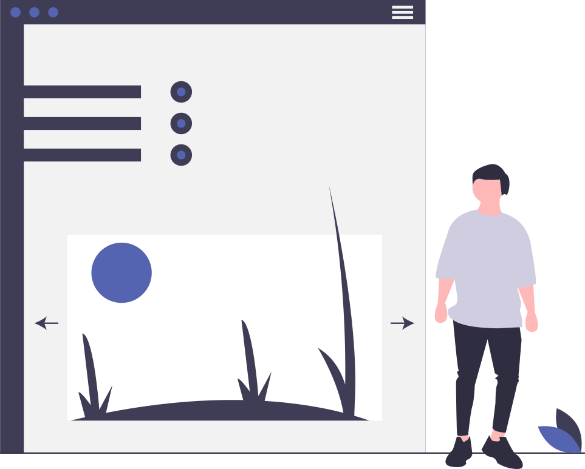

Create something beautiful with Polyel...
# A full stack asynchronous PHP framework
Powerful and rapid custom URI Router, easy to use and feature rich.
Custom built Templating system tailor made to suit the framework workflow.
Built in security for CSFR, XSS, SQL Injection, Encryption and Authorisation.
Automatic SSL installation via Ley's Encrypt.
Rapid async server clients for Redis, MySQL and file system access.
Support for modal notifications and email delivery.
Based on modern MVC standards and conventions. Everything is organised for you so you can start building.
No complex XML or YAML configuration, plain and simple to get started and getting you working on your idea.
# Application use cases with Polyel
API Development
Build a web or mobile API server, Polyel is built with API development in mind, making it easier for you to create something great. A REST service is a breeze with Polyel.
Real Time Services
A live chat application? Event tracking and monitoring? No matter what real time application you want to build, it is easy to use the power of Polyel and PHP to build something to handle real time loads.

Web Application
Create the next startup or SaaS with Polyel, built from the ground up based on the Swoole project to aid you in full stack async web application development.
Game Server
A game server needs a backend. Polyel is ready to handle thousands of connections and scale with you using its asynchronous paradigm. Based on Swoole, Polyel can do everything at once, database processing, tasks and events etc.
Event Based Development
Taking full advantage of event based programming, Celeste utilises the Swoole epoll/kqueue kernel to bring rapid performance to your PHP application and its users.
Data Management
Designed to manage multiple requests at once, it is possible to concurrently handle ~10K MySQL read requests in 0.2s! Using the Swoole Coroutine paradigm, building an application to process huge amounts of data is no problem, you just need the idea.
Create your next big idea with the new powers of PHP from Polyel
A modern framework based on modern technologies and standards
# A foundation for your next big project
An open MVC framework for ambitious developers, build the next creative idea with...
Get Polyel 1.0